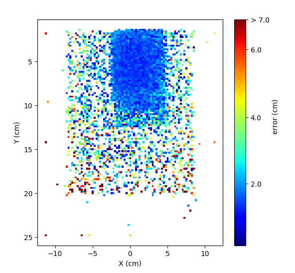
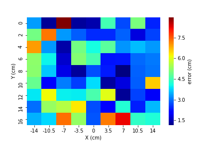

Performance
Demo Video
這部影片是我們系統實測的結果，由於計算量最大的部分已經移到運算電腦上了，因此只要保持網路順暢，基本傳輸效率可以保持在 3~5 fps，可以算是達成 real-time 的效果。
 除了傳輸效率之外，而我們也針對判別的準確率進行評測。左圖是我們在 Gaze Capture dataset 上進行 validation 的誤差分布圖。從分布圖上可以看到，web camera 周圍是 model 表現最好的區域，普遍可以將誤差控制在 2 cm 以下，整體的平均誤差也只有 2.58 cm。右圖則是我們系統實際統計的誤差數據，我們把電腦螢幕切割成 9 * 9 的網格進行統計，web camera 一樣位於 (0, 0) 的區域，雖然實際上的誤差不像 validation 一樣有特定的分布，但仍可以看到大多數區域的誤差都在 4.5 cm 以下，經過計算總體平均誤差也只有 3.5 cm。由於 validation set 大多是由手機及平板所蒐集的圖片，而我們的系統則是應用於桌上型電腦及筆記型電腦上，因此以 system error 對比 valitation error 的表現，可以推測 calibration 在系統上發揮了相當不錯的功用。